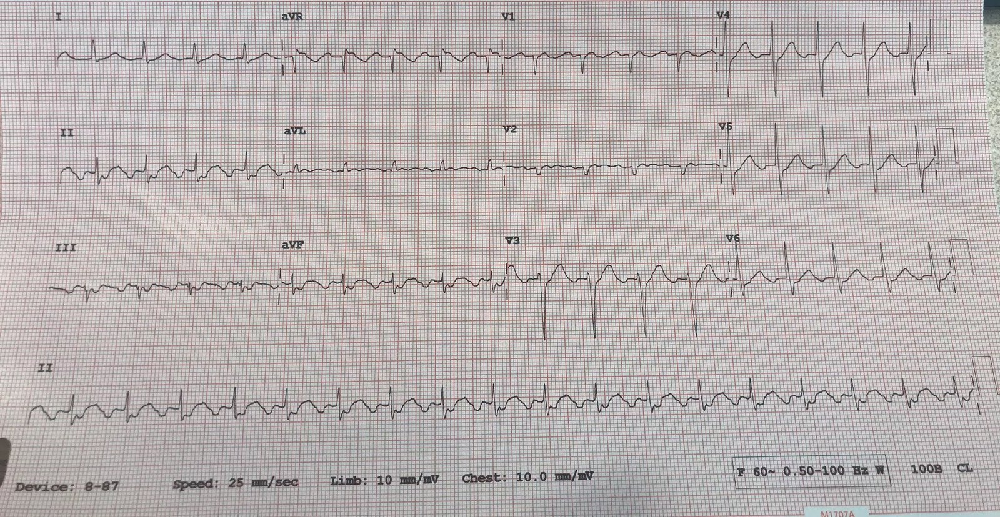
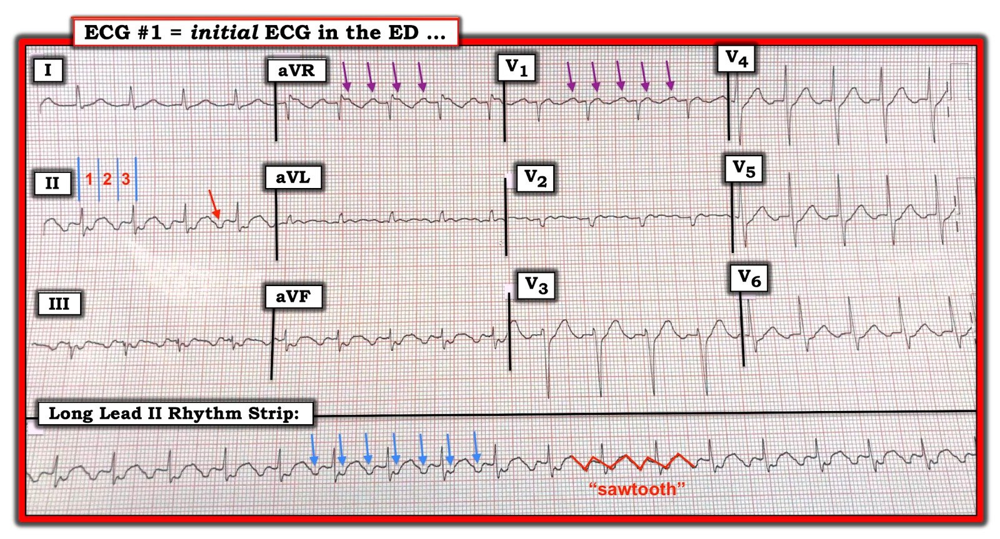

26/11/2019 — ST chênh xuống lan tỏa kèm ST chênh lên ở aVR – nguyên nhân là gì?
Bản dịch tiếng Việt của bài "Global ST depression with ST elevation in aVR – what is the cause?" – Dr. Smith’s ECG Blog. Giữ nguyên toàn bộ 4 hình ảnh của bản gốc.
Tác giả: Pendell Meyers
Một bệnh nhân cao tuổi có tiền sử bệnh tim đến khám vì khó thở. Điện tâm đồ này được đưa cho tôi xem vì lo ngại có ST chênh xuống lan tỏa và ST chênh lên ở aVR.
Bạn sẽ phản hồi thế nào?


Sóng cuồng nhĩ đang giả dạng ST chênh xuống lan tỏa, và do đó tất yếu phải có dấu hiệu soi gương là ST chênh lên biểu kiến ở aVR.
Tần số thất hơi lớn hơn 100 l/p, với blốc 2:1. Điều này có nghĩa là tần số cuồng nhĩ là 200 l/p, điều khá bất thường trừ khi bệnh nhân có nhĩ trái rất lớn, giãn và/hoặc dùng thuốc chống loạn nhịp làm chậm tốc độ dẫn truyền điện thế hoạt động (điển hình là thuốc nhóm 1, nhóm chẹn kênh Na).
Bệnh nhân được dùng thuốc ức chế nút AV và nhịp chuyển thành cuồng nhĩ với blốc thay đổi, chậm hơn (đáng tiếc là không có dải nhịp).
Bệnh nhân không có ACS. Ba lần xét nghiệm troponin đều âm tính. Bệnh nhân được điều trị cuồng nhĩ và tiến triển tốt.
Điểm cần học:
Cuồng nhĩ có thể giả dạng ST chênh xuống lan tỏa, điều luôn luôn phải gây ra ST chênh lên soi gương ở chuyển đạo aVR. Cuồng nhĩ cũng có thể giả dạng ST chênh lên, hoặc che lấp những biến đổi ST thật sự bên dưới. Xem các ca khác sau đây để có ví dụ:
Is this inferor STEMI? (Đây có phải STEMI thành dưới không?)
Tachycardia and ST Elevation. (Nhịp nhanh và ST chênh lên.)
Atrial Flutter with Inferior STEMI? (Cuồng nhĩ kèm STEMI thành dưới?)
Atrial Flutter Mimicking ST Depression (Cuồng nhĩ giả dạng ST chênh xuống)
What is the Diagnosis? (Chẩn đoán là gì?)
Inferolateral ST elevation, vomiting, and elevated troponin (ST chênh lên thành dưới-bên, nôn và troponin tăng)

===================================
BÌNH LUẬN CỦA TÔI, bởi KEN GRAUER, MD (26/11/2019):
===================================
Tôi xin bổ sung thêm vào Những điểm cần học của ca giảng dạy quan trọng này do Dr. Meyers trình bày.
- Để rõ ràng — tôi đã sao lại và đánh dấu điện tâm đồ của ca này trong Hình 1 (Xem phần chữ).


ĐIỂM #1: Những bác sĩ lâm sàng đầu tiên đọc bản ghi này, và nêu lo ngại về “ST chênh xuống lan tỏa kèm ST chênh lên ở aVR” — đã không theo hệ thống khi diễn giải. Thay vào đó, họ nhảy ngay tới việc đánh giá sóng ST-T. BƯỚC thứ 1 trong cách tiếp cận hệ thống để diễn giải bất kỳ điện tâm đồ nào — là bắt đầu bằng việc đánh giá nhịp — điều rõ ràng đã không được thực hiện.
- Theo kinh nghiệm của tôi, sai lầm lớn nhất (lớn hơn hẳn! ) mà tôi thấy ngay cả những người đọc có kinh nghiệm mắc phải — là không NHÌN TRƯỚC TIÊN vào dải nhịp chuyển đạo II dài ở cuối bản ghi 12 chuyển đạo. Đúng theo nghĩa đen, “con mắt đã qua rèn luyện” của bạn chỉ cần KHÔNG quá 2-3 giây để quét chuyển đạo II dài này. Nếu bạn không thấy một sóng P dương đi trước mỗi phức bộ QRS với khoảng PR cố định trên chuyển đạo II dài này — thì bạn không có nhịp xoang.
- Những ngoại lệ duy nhất của quy tắc này (khi nhịp vẫn có thể là nhịp xoang dù không có sóng P dương ở chuyển đạo 2) — là khi có: i) đặt sai vị trí điện cực (thường gặp nhất là nhầm lẫn điện cực tay trái và tay phải); hoặc, ii) tim sang phải. Do đó, nhịp trong Hình 1 rõ ràng không phải nhịp xoang — vì sóng P ở chuyển đạo II không dương (mũi tên ĐỎ ở chuyển đạo 2).
- ĐIỀU CỐT LÕI: NẾU bạn không bắt đầu việc đánh giá mỗi một và mọi điện tâm đồ bạn diễn giải bằng một cái “nhìn có rèn luyện” 2-3 giây vào dải nhịp chuyển đạo II dài — thì bạn CHẮC CHẮN sẽ bỏ sót rất nhiều nhịp không phải xoang .
ĐIỂM #2: Một khi đã bảo đảm bệnh nhân ổn định huyết động — có 5 Thông số cần đánh giá trong Diễn giải Hệ thống bất kỳ nhịp tim nào. 5 thông số này dễ nhớ nhờ câu nói “Watch your Ps, Qs and the 3Rs” (tạm dịch: “Hãy để mắt tới các P, Q và R”). (BẤM VÀO ĐÂY — để xem bàn luận chi tiết về cách tôi áp dụng cách tiếp cận hệ thống này vào việc diễn giải nhịp).
- LƯU Ý — Thứ tự đánh giá 5 thông số này không quan trọng, miễn là bạn luôn đánh giá từng thông số. Tôi thường thay đổi thứ tự mình dùng, tùy theo rối loạn nhịp tôi đang xem (tức là, Hãy bắt đầu với những thông số dễ nhận ra nhất đối với nhịp cụ thể đang ở trước mắt bạn! ).
Áp dụng Cách tiếp cận Hệ thống này cho nhịp trong Hình 1:
- Sóng P (hoặc nếu không thấy sóng P rõ ràng … Có bằng chứng của hoạt động nhĩ không?) — Như đã nói, mũi tên ĐỎ ở chuyển đạo II cho thấy không có sóng P dương ở chuyển đạo II. Dù vậy, sóng lệch âm nhất quán đi trước mỗi phức bộ QRS ở chuyển đạo II (cũng như ở các chuyển đạo khác) — gợi ý rằng có hoạt động nhĩ.
- Phức bộ QRS rộng hay hẹp? Trong Hình 1 cần thấy rõ rằng phức bộ QRS hẹp ở cả 12 chuyển đạo. Do đó — nhịp này là nhịp trên thất!
3 chữ R: i) Tần số (Rate) của nhịp; ii) Nhịp có đều (Regular) không?; và, iii) Nếu có sóng P (hoặc hoạt động nhĩ) — hoạt động nhĩ này có liên quan (Related) với các phức bộ QRS lân cận không?
- Trong Hình 1 — tần số (Rate) thất của nhịp là ~110/phút (tức là, như thấy ở chuyển đạo II — khoảng R-R dài dưới 3 ô lớn một chút — nên tần số thất nhanh hơn một chút so với 300/3 ~110/phút).
- Đáng tiếc — Hình 1 có phần bị cong và biến dạng. Dù vậy, nhịp thất có vẻ đều (Regular).
- Hoạt động nhĩ (dưới dạng sóng lệch âm đi trước mỗi phức bộ QRS ở từng chuyển đạo thành dưới) — quả thật có vẻ liên quan (Related) với phức bộ QRS đi ngay sau nó qua một khoảng PR cố định.
ĐIỂM #3: Như tôi vẫn thường nhấn mạnh — cách nhanh nhất và dễ nhất để ngay lập tức trở nên “giỏi” hơn RẤT NHIỀU trong việc diễn giải nhịp — là thường xuyên dùng COMPA ĐO (CALIPERS).
- Trong Hình 1 — NẾU bạn dùng compa đo, sẽ dễ dàng thấy có 2 sóng lệch âm cho mỗi phức bộ QRS — và các sóng lệch âm này đều đặn một cách chính xác (các mũi tên XANH LAM trên dải nhịp chuyển đạo II dài). Như vậy, có dẫn truyền AV 2:1.
- Thêm một xác nhận nữa cho hoạt động nhĩ 2:1 chính xác có thể thấy qua các sóng lệch dương đều đặn ở các chuyển đạo aVR và V1 (các mũi tên TÍM ở những chuyển đạo này).
ĐIỂM #4: Khi nhịp thất đều và có dẫn truyền AV 2:1 — cách tốt nhất để tính tần số nhĩ là nhân đôi tần số thất. Trong ca này — 110/phút ( = tần số thất) X 2 ~220/phút cho tần số nhĩ.
- Do đó — Theo Cách tiếp cận Ps, Qs, 3R, nhịp trong Hình 1 là một SVT (nhịp nhanh trên thất – SupraVentricular Tachycardia) đều với tần số ~110/phút, kèm dẫn truyền AV 2:1 (tần số nhĩ ~220/phút).
ĐIỂM #5: Hãy nhớ rằng có một Chẩn đoán Phân biệt cho bất kỳ nhịp SVT đều nào, cũng như cho nhịp SVT đều kèm dẫn truyền AV 2:1 (BẤM VÀO ĐÂY — để xem Phần Ôn tập của tôi về một ca tương tự trong bài đăng ngày 12 tháng Mười Một năm 2019 trên Dr. Smith’s ECG Blog).
- Vì trong ca này có dẫn truyền AV 2:1 ở Hình 1 — về mặt thực hành, chúng ta có thể loại trừ nhịp nhanh xoang và SVT vào lại (như AVNRT hoặc AVRT). Về cơ bản, điều này chỉ còn lại việc phân biệt giữa AFlutter với ATach (nhịp nhanh nhĩ – Atrial Tachycardia).
- AFlutter chưa được điều trị ở người lớn thường đi kèm tần số nhĩ khoảng ~300/phút (dao động trong khoảng 250-350/phút). Vì tỷ lệ dẫn truyền thường gặp nhất của AFlutter mới khởi phát là 2:1 — tần số thất của AFlutter chưa được điều trị thường gần với ~150/phút (tức là, 300/2 ~150/phút.). MẤU CHỐT của những khái quát này về tần số trong AFlutter nằm ở chữ “chưa được điều trị”. NẾU bệnh nhân cao tuổi này đang dùng bất kỳ thuốc chống loạn nhịp (hoặc thuốc hạ huyết áp) nào có thể làm chậm tần số — thì AFlutter có thể biểu hiện với tần số thất chậm hơn đáng kể so với 150/phút. Điều còn thiếu trong bệnh sử của bệnh nhân này là thông tin bệnh nhân cao tuổi này đang dùng những thuốc gì!
- Không phải lúc nào cũng phân biệt được ATach với AFlutter bằng điện tâm đồ, đặc biệt nếu tần số AFlutter chậm hơn bình thường (Xem TẠI ĐÂY). Dù vậy — sự hiện diện của hoạt động nhĩ “răng cưa” điển hình (các đường ĐỎ chéo ở phần sau của dải nhịp chuyển đạo II dài) — gợi ý mạnh mẽ rằng dù tần số nhĩ chậm hơn bình thường, nhịp trong Hình 1 là AFlutter chứ không phải ATach.
ĐIỂM #6: Một điểm về ngữ nghĩa mà tôi thấy cần nêu ra — là nhịp trong Hình 1 là AFlutter với dẫn truyền AV 2:1 (chứ không phải “blốc” AV 2:1).
- Việc dùng thuật ngữ “blốc” hàm ý bệnh lý. Thay vào đó, khi có tần số nhĩ rất nhanh như trong cuồng nhĩ, việc chỉ 1 trong mỗi 2 xung động tới nút AV được dẫn truyền xuống thất là điều sinh lý.
ĐIỂM #7: Cuối cùng — tôi nghi ngờ rằng sẽ có biến đổi ST đáng kể (chênh lên hoặc chênh xuống) nếu cuồng nhĩ (AFlutter) trong ca này hết đi. Khi luyện tập nhiều — người ta sẽ khá giỏi trong việc “trừ đi trong đầu” các sóng cuồng nhĩ khỏi đoạn ST — và theo mắt tôi, làm như vậy sẽ cho ra các sóng ST-T gợi ý không có thay đổi cấp tính nào ở bệnh nhân này.
Chúng tôi xin CẢM ƠN Dr. Meyers đã trình bày ca bệnh giàu tính giáo dục này!